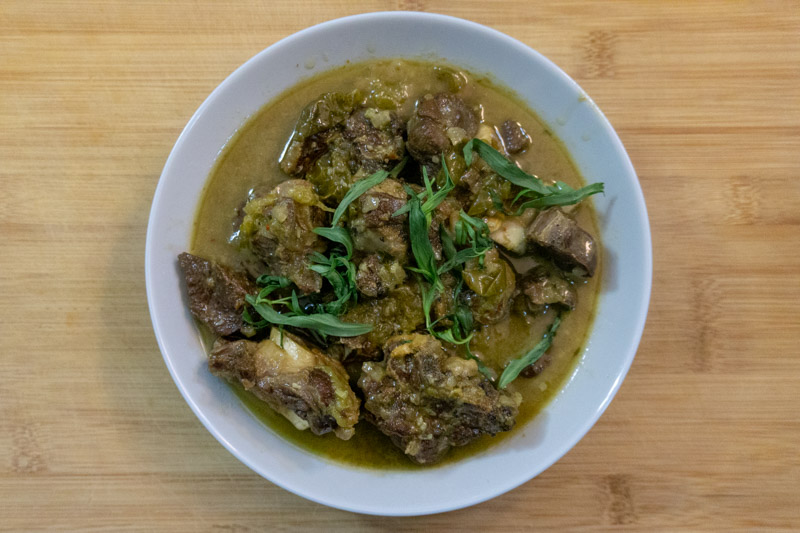

Chakapuli

Ingredients
- 1kg (2lbs) lamb stew meat
- 1 medium yellow onion, diced
- 4 cloves garlic, minced
- 500ml (2 cups) dry white wine*
- 30g (1oz) fresh tarragon stalks, tied in a bundle with cooking twine
- 200g (7oz) unripe cherry plums (optional)
- 1 litre (4 cups) low sodium chicken stock
- 120ml (1/2 cup) green tkemali sauce
Instructions
- Preheat oven to 160°C/320°F
- Pat lamb dry with paper towels and season generously with salt and pepper. Over medium heat in a large Dutch oven or oven-safe pot, heat a tablespoon of neutral oil until shimmering. Working in batches, sear the meat until it is well browned on all sides. Transfer to a plate and set aside.
- Reduce heat to medium-low. Add onion and cook, stirring occasionally, until well-softened, about 5 minutes, scraping up any browned bits as the onions release their moisture. Add garlic and cook until just fragrant, about 30 seconds.
- Pour in wine and bring to a simmer. Cook until the alcohol smell has dissipated and it has reduced slightly, about 5 minutes. Take this time to scrape up any remaining browned bits from the bottom of the pan.
- Add the lamb back into the pot along with any accumulated juices. Add the tarragon bundle and the plums, if using. Pour over the chicken stock and bring to a gentle simmer.
- Turn off the heat and over the pot. Transfer to the oven and cook until lamb is very tender and the stew is fragrant, about two hours.
- Remove the pot from the over, uncover, remove the tarragon bundle and bring to a simmer over low heat. Stir in tkemali sauce and allow to simmer until the sauce is reduced and thickened slightly, about 30 more minutes. Portion into bowls and serve immediately, preferably with a side of crusty bread and a Georgian amber wine.
Notes
If possible, use a Georgian amber wine here. If that's not available, a full-bodied white wine like an oaked Chardonnay or Bordeaux Blanc will work well